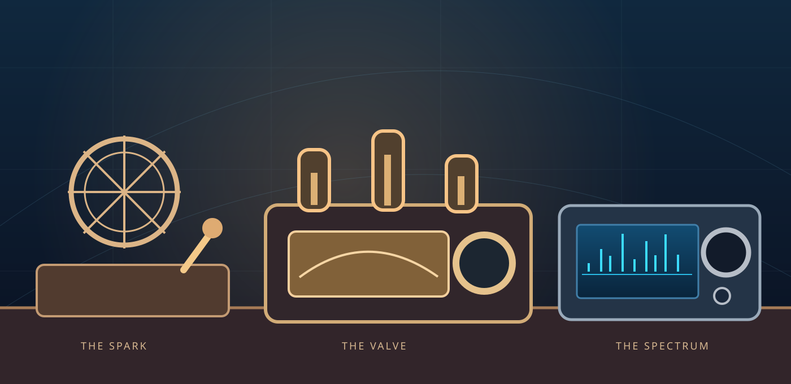

I · ORIGINS
Wireless beginnings
A language of dots and dashes
Early wireless stations used spark transmitters to send Morse. Those broad signals were inefficient, yet they carried messages across the air.
Historical reference ↗
MONA RADIO / THE RADIO MUSEUM
AN INDEPENDENT DIGITAL COLLECTION
From the first spark of wireless to the waterfall on your screen. Explore radio's ideas, instruments and the people-curiosity that connects them.

No radio connection needed. Just curiosity.
THE STORY / FOUR ERAS
Four chapters in the technology that changed how we connect, listen and explore.
I · ORIGINS
Wireless beginnings
Early wireless stations used spark transmitters to send Morse. Those broad signals were inefficient, yet they carried messages across the air.
Historical reference ↗II · THE VALVE ERA
Continuous wave
Vacuum-tube oscillators made narrow, continuous-wave Morse practical and helped move radio beyond the spark era.
Historical reference ↗III · SOLID STATE
Radios get smaller
Semiconductors and integrated circuits helped radio equipment become smaller and more portable over time.
Historical reference ↗IV · THE SDR AGE
The visible spectrum
Digital sampling, processing and live spectrum displays reshape how an operator explores the band.
Historical reference ↗Before we could see a signal,
we learned to hear one.
THE COLLECTION / MODERN INSTRUMENTS
Eight models listed on Mona Radio's current public supported-radios page, seen through the lens of design and radio technology.
8 radios

Portable · HF to UHF
An all-mode portable station with a built-in spectrum and waterfall display.
Manufacturer information ↗
HF / 50 MHz · RF direct sampling
An accessible tabletop SDR, combining HF operation with a live spectrum scope.
Manufacturer information ↗
VHF / UHF · All mode
A specialist instrument for 144, 430/440 and 1200 MHz bands.
Manufacturer information ↗HF / 50 MHz · Dual receiver
Independent receivers and twin spectrum views for a more expansive look at the band.
Manufacturer information ↗HF / 50 MHz · Split station
A separate RF deck and control head imagine the station as a more flexible space.
Manufacturer information ↗Wideband · Receive only
A communications receiver built for listening, monitoring and exploring.
Manufacturer information ↗HF / 50 MHz · SDR
A compact station with a high-resolution spectrum display and DSP controls.
Manufacturer information ↗HF / 50 MHz · Compact
A small-bodied all-mode HF transceiver well suited to limited operating space.
Manufacturer information ↗No matching radios. Try a different search.
Original concept illustrations, not manufacturer photographs or faithful copies of any model. Museum inclusion is editorial, not a compatibility or transmit claim. For current supported radios and connection methods, see the support matrix →
NOTES FROM THE CURATOR
The Radio Museum uses original artwork to suggest each era's design language. Historical descriptions draw on the ARRL; modern product summaries link to their manufacturers. Mona is not affiliated with these organisations.
All historical material is editorial, not an inventory of physical objects Mona owns. Product and brand names belong to their owners.
THE STORY CONTINUES
Learn what Mona Radio can do with your own station.
Explore supported radios